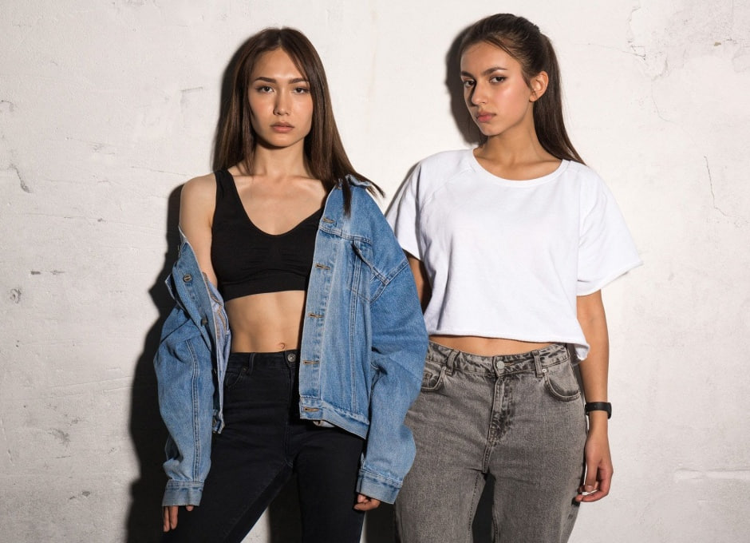
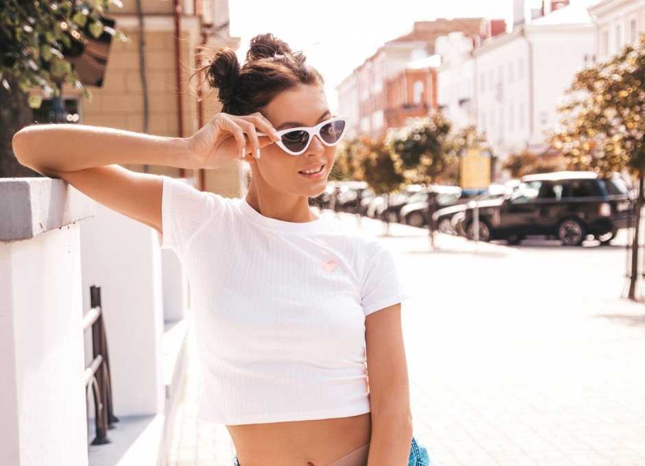

О нашем магазине
Добро пожаловать в наш магазин женских топов! Мы создаём стильные, удобные и качественные вещи, которые подчеркнут вашу индивидуальность и добавят уверенности в каждом образе. Наша цель — вдохновлять вас на эксперименты с модой, предлагая топы для любого случая: будь то повседневный лук, спортивная тренировка, деловая встреча или романтический вечер.
Мы — команда энтузиастов, которые верят, что мода должна быть доступной, комфортной и вдохновляющей. Наш магазин специализируется на женских томах, предлагая широкий ассортимент моделей: от повседневных до нарядных, от спортивных до пляжных. Мы тщательно отбираем материалы и продумываем каждый дизайн, чтобы вы чувствовали себя комфортно и выглядели безупречно.
Наш магазин начался с маленькой идеи, которая превратилась в большое дело. Всё началось с того, что мы заметили, как сложно найти качественные и стильные топы по доступным ценам. Мы решили изменить это и создали бренд, который сочетает в себе модные тренды, высокое качество и заботу о клиентах. С каждым годом мы растем, но наши ценности остаются неизменными: стиль, качество и внимание к вашим потребностям.
Мы — команда энтузиастов, которые верят, что мода должна быть доступной, комфортной и вдохновляющей. Наш магазин специализируется на женских томах, предлагая широкий ассортимент моделей: от повседневных до нарядных, от спортивных до пляжных. Мы тщательно отбираем материалы и продумываем каждый дизайн, чтобы вы чувствовали себя комфортно и выглядели безупречно.
Наша команда

Алиса, генеральный директор
Алиса — мозг и сердце магазина. Она всегда знает, как найти выход из сложной ситуации и превратить проблемы в возможности. Её стратегическое мышление и умение предвидеть риски помогли магазину выстоять в трудные времена. Алиса обожает головоломки и часто проводит мозговые штурмы с командой, чтобы придумать новые идеи. Её девиз: «Каждый лабиринт имеет выход, нужно лишь его найти».
Марина, креативный директор
Марина — душа магазина, отвечающая за его уникальный стиль и атмосферу. Она вдохновляет всех вокруг своей креативностью и умением видеть красоту даже в самых обычных вещах. Марина обожает создавать необычные витрины и придумывать тематические акции, которые привлекают клиентов. Её мечта — превратить магазин в место, где каждый почувствует себя частью чего-то волшебного.
Вера, финансовый директор
Вера — опора магазина, которая следит за тем, чтобы всё было в порядке с финансами. Она прагматична, организована и всегда знает, как распределить ресурсы так, чтобы хватило на всё задуманное. Вера — мастер компромиссов, умеющий находить баланс между мечтами и реальностью. Её любимая фраза: «Мечты должны быть реалистичными, а реальность — вдохновляющей».
Ирина, руководитель отдела клиентского сервиса
Ирина — лицо магазина, человек, который всегда знает, как найти подход к каждому клиенту. Она обаятельна, дружелюбна и обладает удивительной способностью располагать к себе людей. Ирина отвечает за обучение персонала и создание атмосферы, в которой каждый посетитель чувствует себя как дома. Её секрет успеха: «Искренность — ключ к сердцу любого человека».